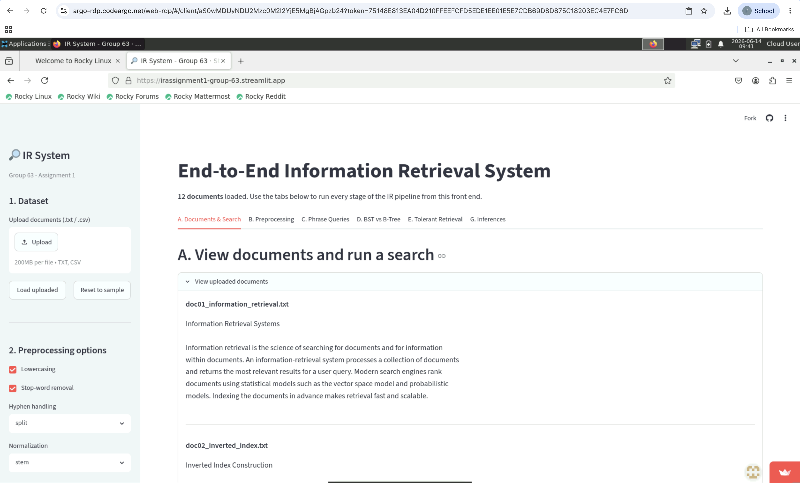
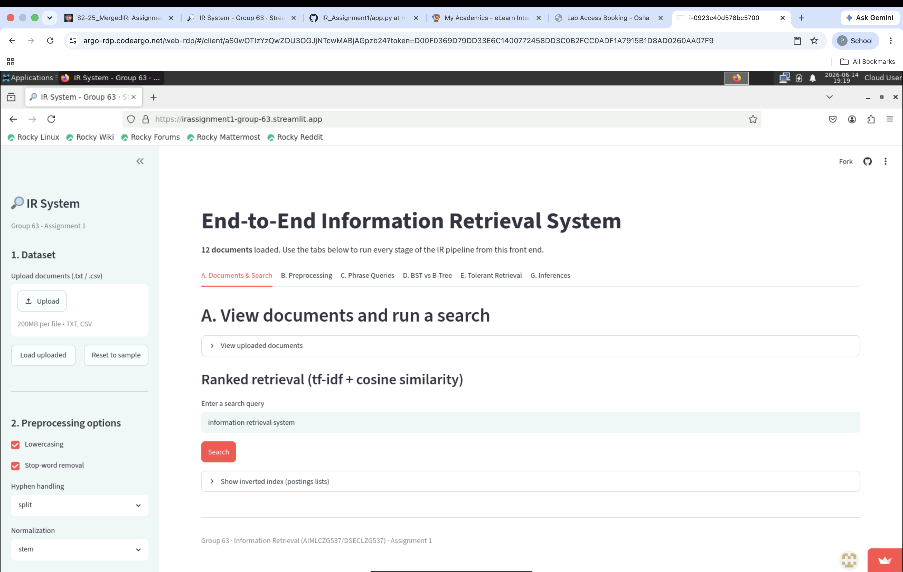
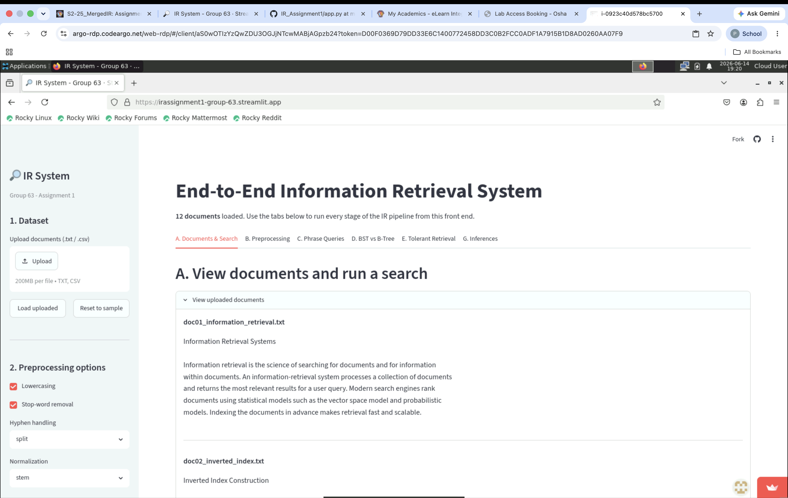
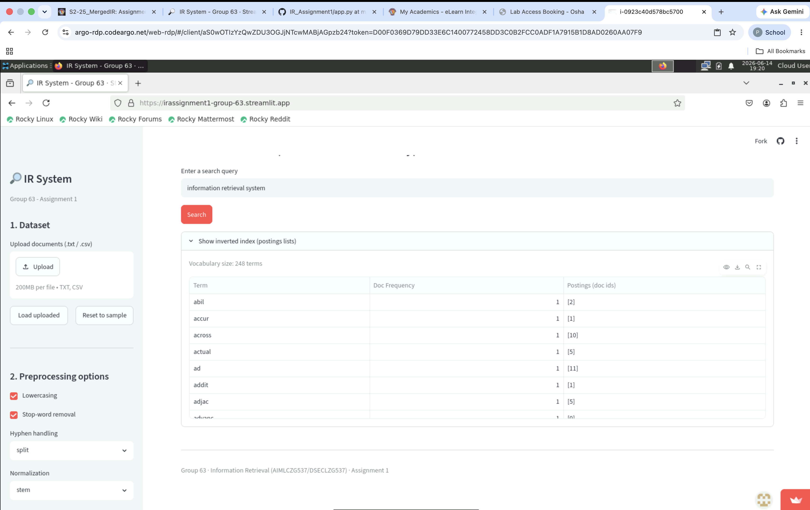
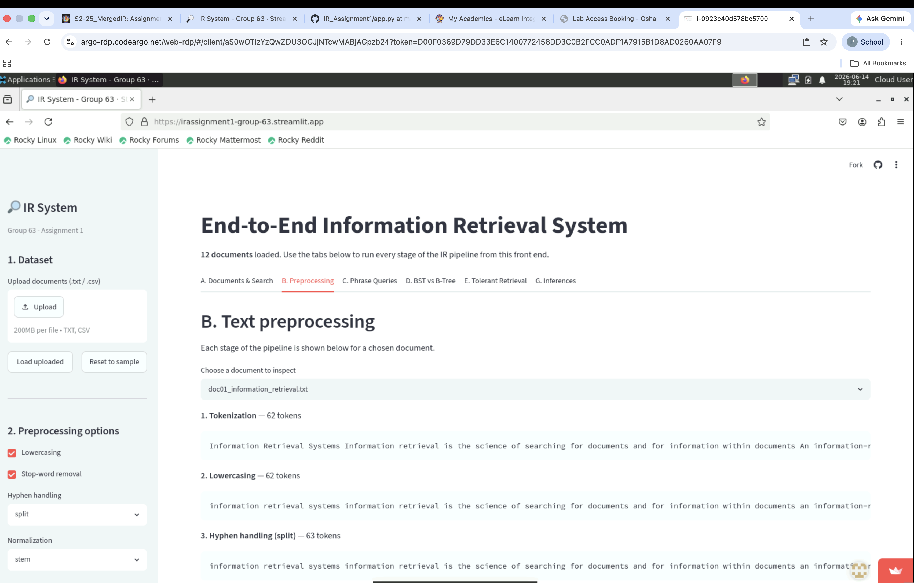
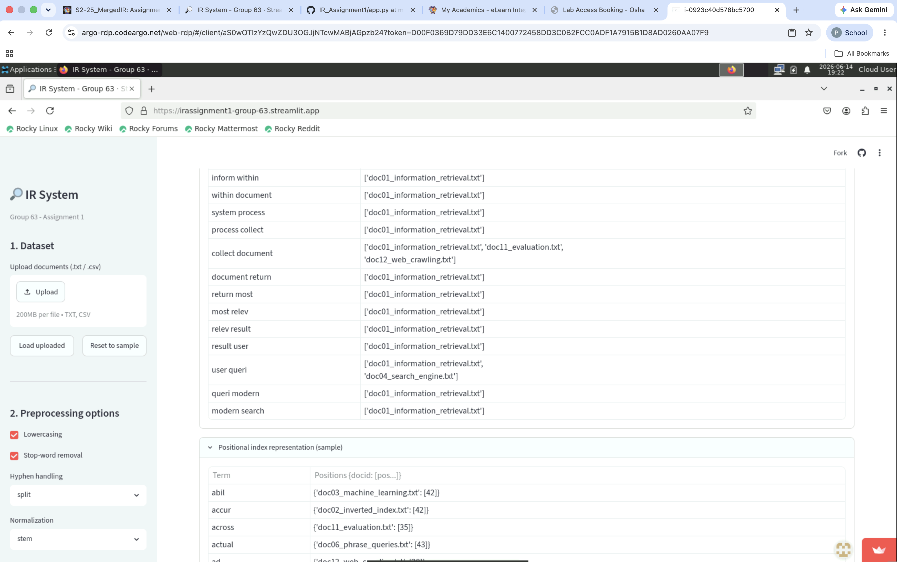
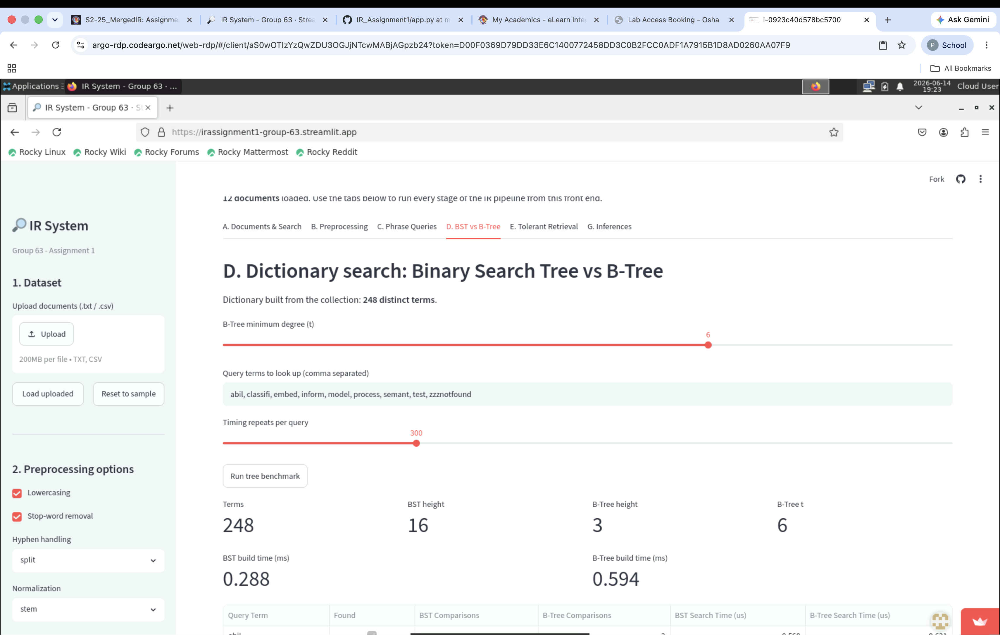
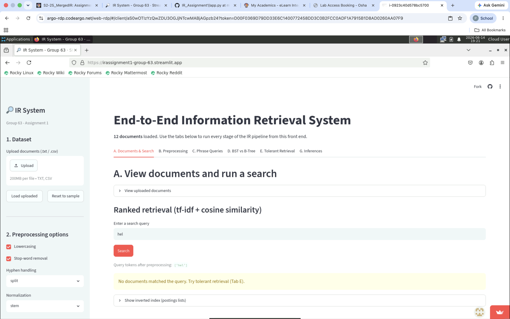
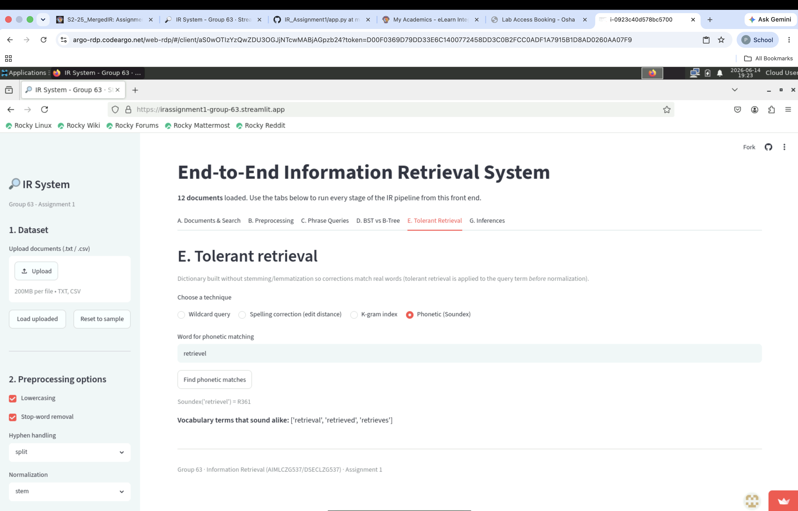
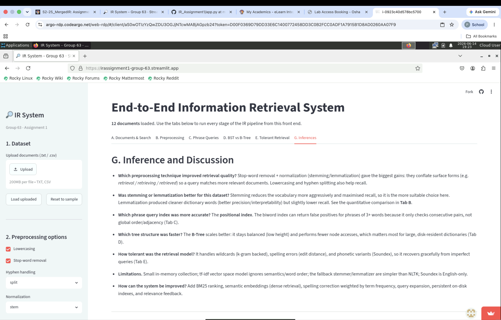

Course: Information Retrieval (AIMLCZG537 / DSECLZG537), S2-25
Group: 63
Deliverable: End-to-end IR system built with Streamlit (app.py)
Live app (deployed): https://irassignment1-group-63.streamlit.app/
We designed and implemented an interactive, end-to-end Information Retrieval system
using Streamlit. The user can upload a document collection, view it, configure
preprocessing, run ranked/phrase/tolerant queries, and compare data structures —
all from the front end. No backend notebook output is required; every result is
produced live in the UI.
Architecture
app.py — Streamlit front end with six tabs (A–E and the compulsory inferences G).ir_utils.py — all IR algorithms (preprocessing, inverted/positional/biword indexes,data/ — sample collection of 12 short text documents about IR concepts.The application was executed on the BITS virtual lab (Rocky Linux desktop via
argo-rdp.codeargo.net). The app is also deployed on Streamlit Community Cloud so it
can be opened directly from the lab browser:
Live app URL: https://irassignment1-group-63.streamlit.app/
Steps performed:
pip install -r requirements.txt then streamlit run app.py).
Figure: IR System (Group 63) running in the BITS virtual lab browser — 12 documents loaded, Tab A "View documents and run a search".
.txt/.csv files; a sample
Figure A1: Tab A — landing view (deployed app, Rocky Linux). Sidebar holds the dataset uploader and preprocessing options; the six tabs (A–E, G) run the full pipeline.

Figure A2: Tab A — "View uploaded documents" expanded, showing the sample collection (doc01, doc02 …).

Figure A3: Tab A — inverted index (postings lists); the dictionary holds 248 distinct terms under stemming.
Pipeline (each stage shown in Tab B):
Tokenization → Lowercasing → Hyphen handling → Stop-word removal → Stemming / Lemmatization → Inverted index.
split (state-of-the-art → state, of, the, art),keep, join (stateoftheart).
Figure B1: Tab B — each preprocessing stage shown for doc01 (tokenization → lowercasing → hyphen handling → …).
We compare on two axes:
| Scheme | Vocabulary size | Reduction vs raw |
|---|---|---|
| No normalization | 306 | 0.0% |
| Stemming | 248 | 19.0% |
| Lemmatization | 260 | 15.0% |
Measured on the deployed app (NLTK Porter stemmer + WordNet lemmatizer). With the
built-in fallback normalizers the figures are 306 / 263 / 280.
Inference: Stemming conflates more aggressively (e.g. retrieval/retrieving/retrieved
→ retriev), giving higher recall and a smaller index, at the cost of producing
non-dictionary stems. Lemmatization yields valid words (better precision/readability)
but merges fewer forms. For this dataset stemming is more suitable because it
maximises recall on a small collection; lemmatization is preferable when output
readability/precision matters. (Numbers above are from the deployed app and are reproducible live in Tab B.)
Implemented and compared two indexes:
For a phrase, the biword index intersects the postings of each consecutive biword;
the positional index additionally verifies that the terms occur at consecutive
positions in order.
| Aspect | Biword index | Positional index |
|---|---|---|
| Storage | pairs of terms | term → {doc → [positions]} |
| 2-word phrases | exact | exact |
| 3+ word phrases | may give false positives | exact |
| Proximity queries | no | yes |

Figure C1: Tab C — sample biword index entries (top) and the positional index (term → {doc: [positions]}).
False positives: for a phrase like "a b c", a document containing "a b … c b"
has both biwords "a b" and "b c" but not the contiguous phrase. The biword index
returns it; the positional index correctly rejects it. The app highlights such
false positives (set difference between the two results).
Why positional is more accurate: it checks global order and adjacency via stored
positions, which the biword index cannot.
A dictionary of all distinct terms is built, then inserted into:
We run multiple query terms many times and record comparisons and search time.
Results from the deployed run (Tab D, t = 6, 248-term dictionary). Comparison counts
are deterministic (terms inserted in a fixed shuffled order, seed 42).
| Query Term | Found | BST Comparisons | B-Tree Comparisons (t=6) |
|---|---|---|---|
| abil | ✓ | 5 | 3 |
| inform | ✓ | 14 | 11 |
| process | ✓ | 12 | 15 |
| test | ✓ | 12 | 16 |
| zzznotfound | ✗ | 10 | 21 |
Structure & timing: BST height 16 vs B-Tree height 3; build time BST
0.288 ms vs B-Tree 0.594 ms. Per-query search times were sub-microsecond and
machine-dependent (see figure).

Figure D1: Tab D — BST vs B-Tree benchmark. Terms 248, BST height 16, B-Tree height 3 (t=6), build times 0.288 ms vs 0.594 ms.
Inference: The B-Tree's height (3) is far smaller than the BST's (16), so it
visits far fewer nodes. Because each wide B-Tree node (up to 2t−1 = 11 keys at t=6) is
scanned linearly, the total key-comparison count can be similar to — or even higher
than — the BST's; the decisive, disk-relevant metric is the number of node accesses,
which the B-Tree minimises. The BST can also degrade when terms are inserted in
near-sorted order. For small in-memory dictionaries the absolute times are close, but
the B-Tree scales far better for large, disk-resident dictionaries because each node
access (a disk read) is expensive.
The system handles imperfect queries with four techniques (Tab E):
inform*, *tion, re*ed): resolved using a k-gram indexretreival → retrieval).Inference: The model is tolerant to prefix/suffix wildcards, typographical errors
(within an edit-distance threshold) and phonetic spelling variants, substantially
improving recall on noisy queries.

Figure E1: A query that returns no exact matches; the app suggests tolerant retrieval (Tab E).

Figure E2: Tab E — phonetic correction. Soundex("retrievel") = R361 matches retrieval / retrieved / retrieves.

Figure G1: Tab G — the compulsory inference and discussion answers shown in-app.
pip install -r requirements.txt
streamlit run app.py
See README.md for full details.
All group members contributed equally (100% each). See Group63_Contribution.xlsx.